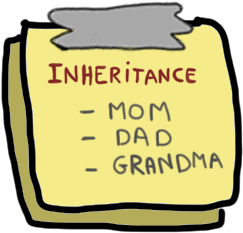
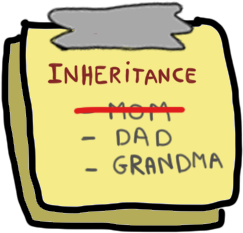
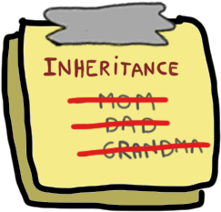
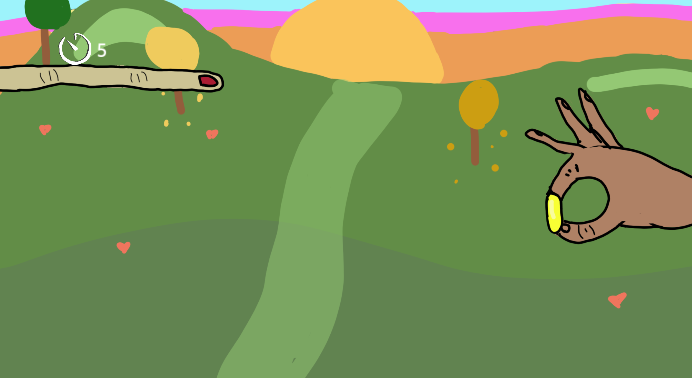
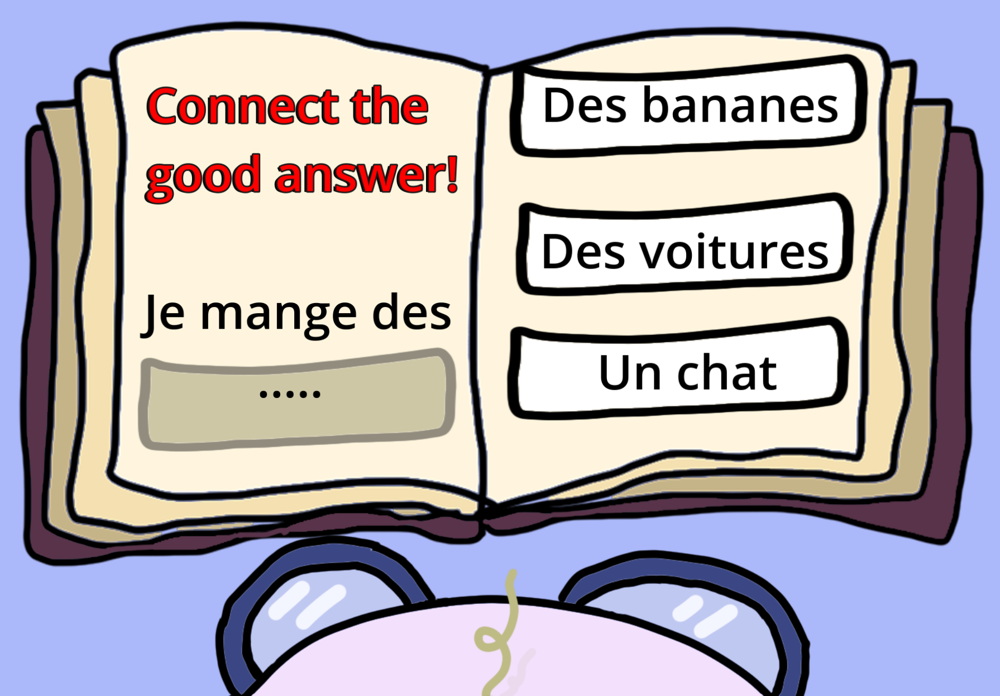

godot · game jam · warioware-like
Familly Gambit
Game Programmer · Game Designer
A WarioWare-like of quick trials where you try not to get disinherited.
Made during a game jam.
The concept
Godot game jam. One goal: build a mockup of a WarioWare.
We chose everyday trials, mundane on the surface but with a staggering social risk: the player puts their reputation on the line… on pain of losing their inheritance!



How it works
System · Game loop
The game loop
Inspired by WarioWare, the game strings together three randomly drawn mini-games. The player has five seconds to clear each trial: succeed and you move on to the next; fail and you lose a life — symbolised by a parent who disinherits you. As the run goes on, the timer speeds up and the seconds tick by faster and faster.
- Three mini-games drawn at random and chained one after another
- 5 seconds per trial — success: on to the next mini-game; failure: the player loses a life
- Each lost life is symbolised by a parent disinheriting the player
- The timer accelerates as the run goes on: the seconds tick by faster and faster
The mini-games
Three quick trials, WarioWare-style — each with its own micro-mechanic.

Mini-game · 01
Pimple Popper
The player has to tap the girl's pimples fast to pop them in time — so she's ready for the class photo!
- Fast tapping mechanic, against the clock
- Punishing failure: the whole class laughs at her and her family disinherits her

Mini-game · 02
The Wedding
The player has to grab the groom's hand and guide it over to the bride's so he can slip the ring onto her finger.
- Grab-and-drag mechanic built on precision
- Failure: the bride calls off the wedding and the family disinherits him

Mini-game · 03
French Test
The player has to complete the quiz by matching the right answer to the sentence to finish.
- Matching mechanic: connect each prompt to the right answer
- Failure: a bad grade on the test and the family disinherits him
Scene switching
A background scene stays loaded at all times: it carries all the game data — remaining lives, current mini-game, rounds won and game speed. Each mini-game is actually a scene loaded on top that reads this data when it starts and returns its result when it ends.
- Persistent background scene: holds the global data (lives, current mini-game, rounds won, game speed)
- Each mini-game is an overlaid scene, loaded then unloaded on top of the background scene
- The two scenes communicate on entry (reading the data) and on exit (returning the result) of the mini-game
Game Design

Game Design
Game design intentions
We really wanted to lean into the WarioWare-like principle: dead-simple mini-games, cleared in a few seconds and deliberately absurd. To amplify the stress the genre is built on, we based them on the most nerve-racking little everyday actions anyone can relate to.
- Leaning into the WarioWare format: ultra-simple mini-games, understood and cleared in an instant
- A deliberately ridiculous, over-the-top tone
- The most stressful everyday situations, to match the tension of the genre
Want to play it?
Playable build, itch.io page or source code — add your links here.